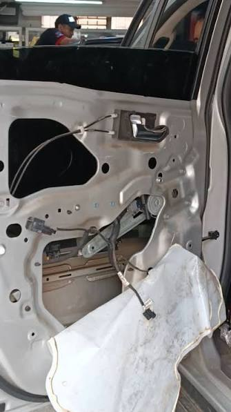

Reparación de cremalleras, chapas, recibidores y bisagras

Reparación de cremalleras y accesorios
Contamos con personal especializado en la reparación y mantenimiento de cremalleras, chapas, recibidores y bisagras para diferentes tipos de vehículos.
Nuestro servicio permite recuperar el correcto funcionamiento de estos componentes, evitando reemplazos innecesarios y garantizando un trabajo seguro y confiable.
- Reparación de cremalleras
- Reparación de chapas
- Reparación de recibidores
- Reparación de bisagras
Soluciones especializadas para sistemas de puertas
Realizamos el diagnóstico, reparación y ajuste de cremalleras, chapas, recibidores, bisagras y otros mecanismos de puertas para vehículos livianos y pesados, recuperando su funcionamiento con soluciones técnicas confiables y duraderas.
Reparación de Cremalleras
Restauramos el funcionamiento de sistemas manuales y eléctricos para un desplazamiento suave y seguro del vidrio.
Reparación de Chapas
Solucionamos problemas de apertura, cierre y bloqueo en puertas de vehículos.
Cambio y Ajuste de Recibidores
Realizamos el ajuste o reemplazo de recibidores para garantizar un cierre correcto de la puerta.
Reparación de Bisagras
Corregimos desgastes, desajustes y daños que afectan el funcionamiento y alineación de las puertas.
¿Por qué elegirnos?
Experiencia
Personal capacitado para realizar reparaciones de calidad.
Seguridad
Trabajamos buscando garantizar el correcto funcionamiento del vehículo.
Calidad
Utilizamos procedimientos adecuados para cada tipo de reparación.